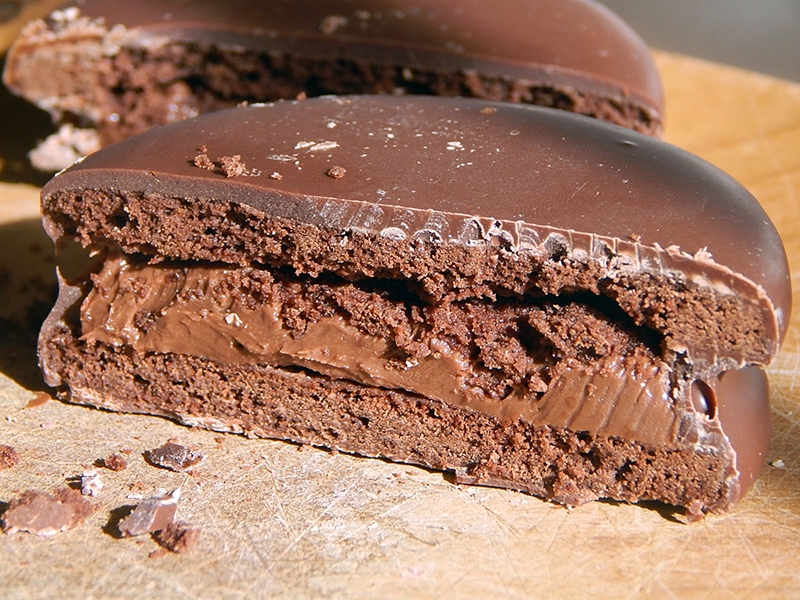
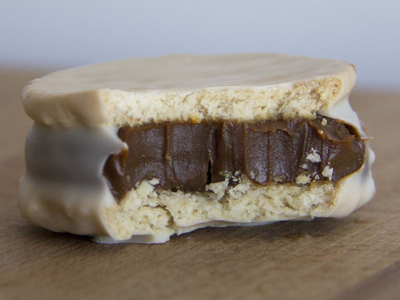
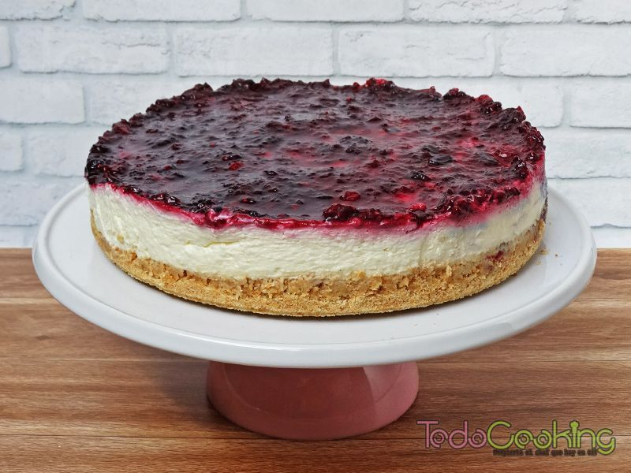
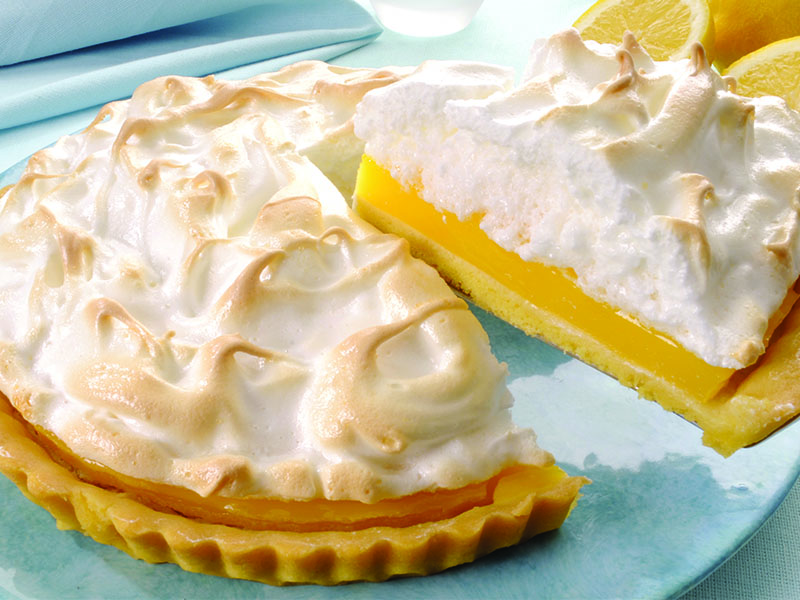
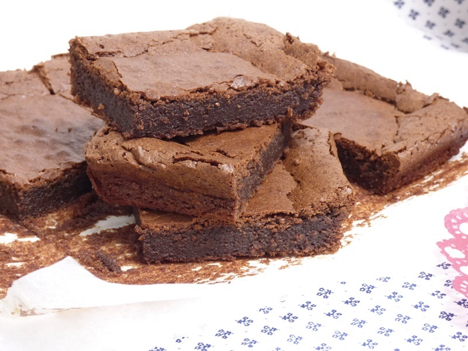

Como preparar los alfajores Marplatenses
En esta receta vamos a ver los ingredientes que lleva y el paso a paso para poder hacer estos alfajores.


Video de Receta original de los Alfajores Marplatenses
PREPARACIÓN
- En un bol vamos a poner la manteca pomada y el azúcar. Agregamos un chorro de esencia se vainilla y procedemos a batir.
- Una vez que obtenemos una preparación bien cremosa, vamos a agregar un huevo y vamos a volver a batir.
- Cuando estén todos los ingredientes bien integrados, vamos a agregar el cacao y vamos a volver a mezclar hasta que se una bien. Luego agregamos la mitad de la harina. Comenzamos mezclando con la espátula y cuando ya se haya incorporado un poco la harina, vamos a meter mano y amasar hasta obtener una pasta homogénea.
- Envolvemos la masa en papel film y la llevamos a reposar a la heladera por 2 horas.
- Pasado ese tiempo, la sacamos y la estiramos con un palo de amasar entre dos láminas de papel film.
- Retiramos el papel film de arriba y cortamos con un cortante redondo las tapas de los alfajores. Traten la masa con delicadeza porque es muy pastosa. Si se vuelve muy difícil de manipular, la pueden llevar a frío por un rato más (30 min aprox).
- Una vez que las sacan, las llevan al horno medio (180º) por 10 minutos. Luego las sacan y las dejan enfriar.
- Lo que queda por hacer es rellenar con dulce de leche. Tomamos una de las tapas, le colocamos el dulce y luego colocamos por encima otra de las tapas.
- Para bañarlos pueden usar un baño de chocolate ya hecho o bien comprar cacao y derretirlo a baño maría. Una vez que lo tienen, lo vierten en un bol y luego envuelven los alfajores en el chocolate. Finalmente, sólo queda dejarlos enfriar y disfrutarlos!

Cheesecake
Ir a la receta

Lemon Pie
Ir a la recetaChocotorta
Ir a la receta

Brownie
Ir a la receta